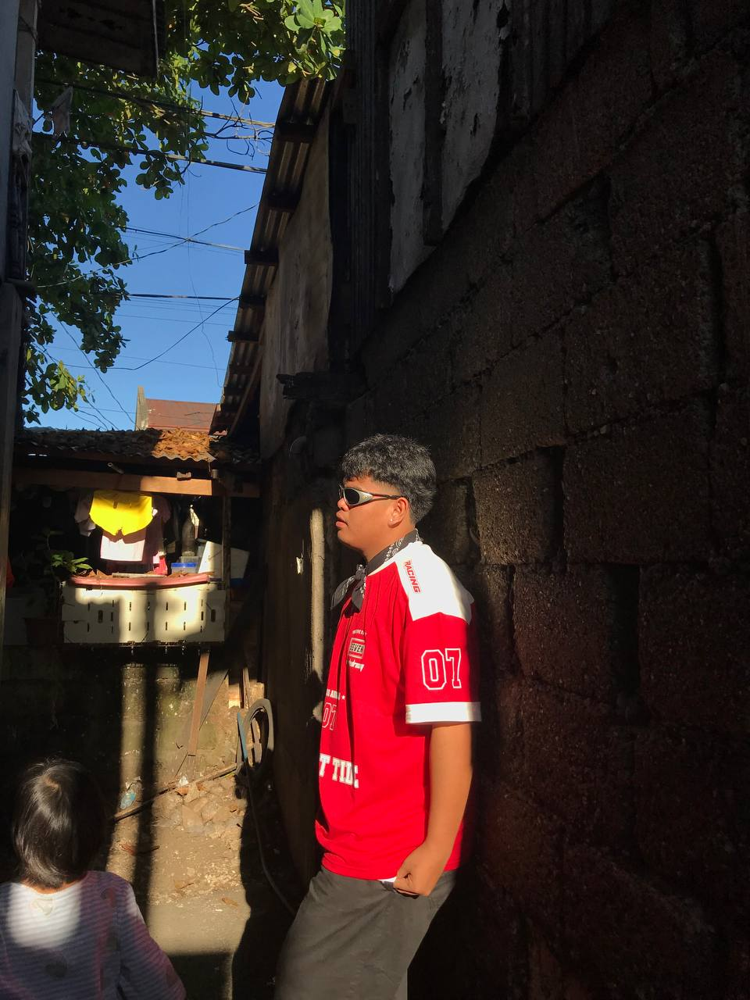
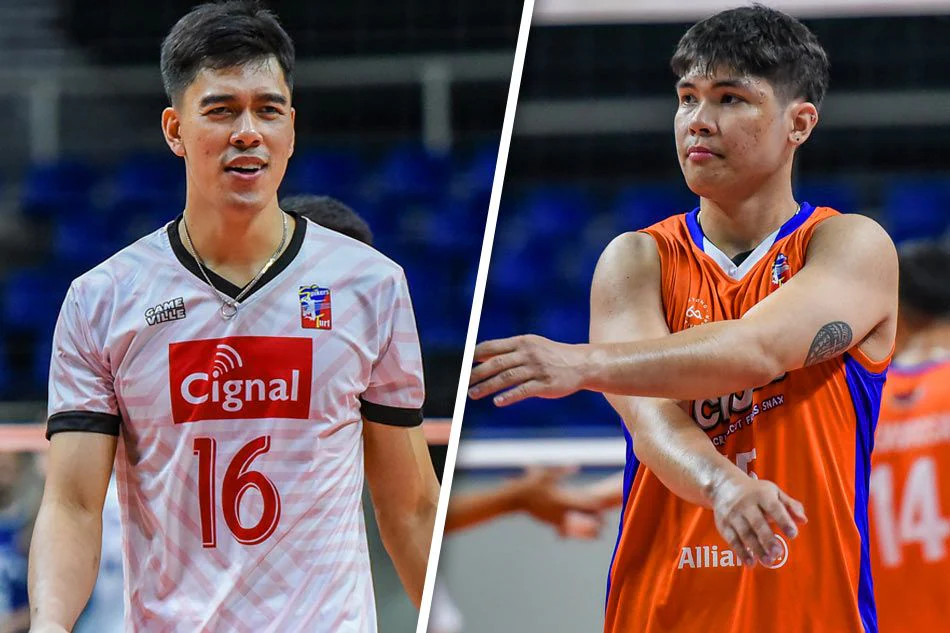

Life is what happens to us while we are making other plans.

My name is Kj V Endico. I am a student who believes in the importance of learning and hard work. I grew up in Elcantorio Looc Danao City, where I learned the values of respect, patience, and perseverance.
In school, I do my best to study well and participate in different activities. During my free time, I enjoy to play a Volleyball , which help me relax and express myself.
One of my greatest strengths is my determination. I always strive to finish what I start and to put my best effort into every task. I value education because I believe it is the key to achieving my goals and improving myself. As a student, I am dedicated to learning not only from books and lessons but also from the experiences and challenges that life presents.
In the future, I want to become a successful Content Creator. I know that with determination and effort, I can reach my dreams and make my family proud. I see myself as someone who is still a work in progress but is determined to keep improving. I know that life will not always be easy, but with faith, persistence, and the support of the people around me, I believe I can reach my dreams.
My Inspiration of Volleyball
My Inspiration
VolleyBall
Bagunas
Espejo

In the world of sports, athletes who stand out are not just those with exceptional skills; they are also the ones who inspire through their character, determination, and leadership. Two such athletes who embody these qualities in Philippine volleyball are Bryan Bagunas and Marck Espejo, both key players who represented Team Philippines in the Alas Pilipinas Volleyball team. Their journeys, personalities, and commitment to the game have not only elevated the sport but also left a lasting impression on aspiring athletes like myself.
Bryan Bagunas is known for his remarkable resilience and adaptability on the court. As an outside hitter, Bagunas is celebrated not just for his powerful attacks and consistency, but for his leadership in crucial moments. His playing style is a perfect balance of skill, passion, and humility. Even during moments of pressure, Bagunas demonstrates calmness, which makes him an ideal role model for younger players. His ability to stay focused, even in high-stress situations, is something I aspire to emulate in my own life. Bagunas does not just play for the game; he plays for the pride of his country, and that sense of purpose shines through in his every action on the court.
On the other hand, Marck Espejo, often called one of the best volleyball players in the country, is a true definition of perseverance and dedication. Espejo's journey was not always easy, but his determination has made him one of the most successful volleyball players in Philippine history. Known for his athleticism, sharp instincts, and leadership, Espejo has become a role model for many athletes, not only in volleyball but in any sport. Whats most inspiring about Espejo is his mindset — he pushes himself to always be better, constantly evolving his game. His calm yet fierce attitude toward the sport reminds us that success does not come overnight; its a product of hard work, sacrifice, and never settling for mediocrity. Espejo's unwavering passion for volleyball is something that resonates deeply with me and continues to inspire my own aspirations.
Both players have shown that leadership in volleyball is not just about scoring points or winning matches. It's about motivating teammates, overcoming adversity, and leading by example. They have taught me that true greatness is rooted in humility, hard work, and an unrelenting drive to improve. Bagunas and Espejo have given their all to represent the Philippines, and their commitment to their craft is something I strive to reflect in my own ambitions.
Their success story is not just about the accolades they have achieved; its about the legacy they are building one of hard work, determination, and a relentless pursuit of excellence. As someone who looks up to them, I hope to carry forward the lessons they have taught through their careers: to never give up, to lead with integrity, and to always play with passion.
In conclusion, Bryan Bagunas and Marck Espejo are more than just volleyball players they are symbols of what it means to fight for one dreams, inspire others, and show that true leadership extends far beyond the court. They have set an example for all of us, especially for young athletes like me, who dream of making a difference through both talent and character.